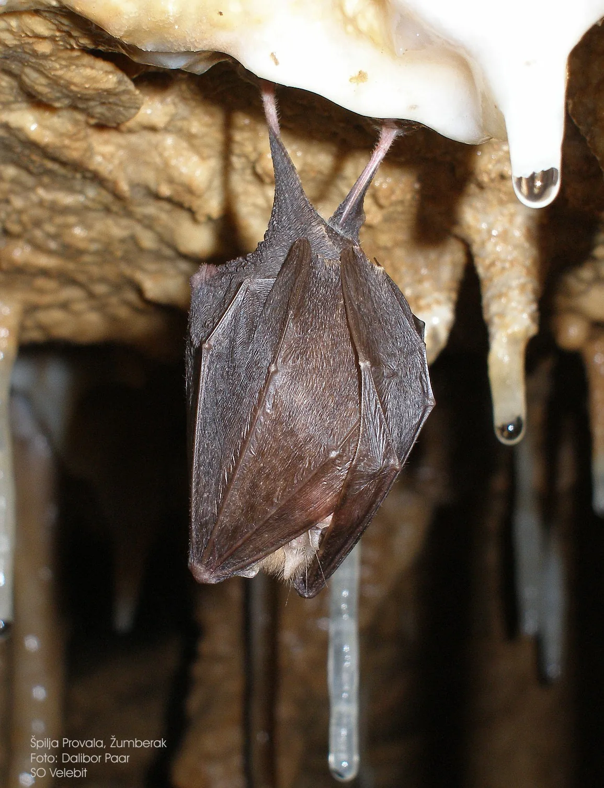

Živi svijet i osnovni pojmovi u speleologiji
Biospeleologija je sintetska znanost koja u sebi sjedinjuje u prvom redu dvije osnovne znanstvene discipline: biologiju i speleologiju. Iz tog je razloga biospeleologu pri istraživanju potrebno poznavanje ekologije,…

Biospeleologija je znanstvena grana koja proučava podzemna staništa, organizme koji ih nastanjuju i njihove međusobne odnose. Naziv te znanstvene grane potječe od triju riječi grčkoga porijekla:
BIOS + SPELEOS + LOGOS = život + šupljina + znanost
Biospeleologija je sintetska znanost koja u sebi sjedinjuje u prvom redu dvije osnovne znanstvene discipline: biologiju i speleologiju. Iz tog je razloga biospeleologu pri istraživanju potrebno poznavanje ekologije, taksonomije, fiziologije i etologije podzemnih organizama kao i osnova speleogeneze, geomorfologije, tektonike, hidrologije i drugih obilježja podzemnoga prostora i njegovih klimatskih čimbenika. Prilikom terenskog istraživanja biospeleolog primjenjuje speleološke, pa i alpinističke i ronilačke tehnike koje mu omogućuju svladavanje podzemnih prostora, katkad impresivnih dimenzija, kakve su jame duboke gotovo 1500 metara, desetke kilometara dugačke špilje i vodom ili morem preplavljeni kanali.
Također je potrebno vrlo dobro poznavanje metoda za uzorkovanje živih organizama, sedimenata, detritusa i vode, zatim izmjere klimatskih parametara, kao što su temperatura, vlažnost zraka, strujanje zraka i drugo. Prilikom istraživanja se podzemne životinje, koje su uglavnom malih dimenzija, fotografiraju i snimaju posebnom opremom, objektivima i rasvjetom. Prema tome, jedan je od preduvjeta uspješnog istraživanja biologije podzemlja upravo interdisciplinarnost.
Živi svijet u špiljama i jamama
Špilje i jame predstavljaju karakteristična staništa obilježena stabilnim ekološkim uvjetima. U takvim podzemnim staništima nema sunčeve svjetlosti, a temperatura zraka i vrlo visoka količina vlage stalne su tijekom cijele godine. Obzirom na prevladavajuće uvjete, špiljske životinje razvile su niz prilagodbi na život u podzemnom okolišu.
Životinje u špiljama dijelimo na više kategorija: Troglokseni (na kopnu) i Stigokseni (u vodi) su životinje koje upotrebljavaju špilje da bi preživjele određeni period. Oni su slučajni stanovnici koji nisu prilagođeni podzemnim uvjetima. Ovisni su o vanjskom okolišu zbog hrane.
Troglofili na kopnu i Stigofili u vodi su životinje koje lako žive i razmnožavaju se i u podzemlju. Djelomično su prilagođeni na špiljske uvjete, no nisu vezani uz njih. Mogu biti u potpunosti špiljske populacije.
Troglobionti (na kopnu) i Stigobionti (u vodi) su životinje koje su se potpuno prilagodile podzemnom okolišu i obično ne mogu preživjeti izvan špilja. Prilagođene su mraku, visokoj vlažnosti i konstantnoj temperaturi. Primjeri troglobionta su endemna pijavica Croatobranchus mestrovi i najpoznatija od njih - Čovječja ribica (Proteus anguinus). U špiljama također nalazimo i mnoge druge organizme; mikroorganizme, spužve, plošnjake, žarnjake, mekušce, kolutićavce, paučnjake, rakove, stonoge, skokune... Otvorena pitanja vezana uz biospeleologiju dotiču opskrbu hranom te distribuciju vezanu uz glacijalna razdoblja – jesu li špiljske životinje preživjele jedno ili više glacijalnih razdoblja i je li to povezano s njihovim spuštanjem u podzemlje?
Osnovni speleološki pojmoviSpeleološka pojava – prirodna podzemna šupljina dulja ili dublja od 5 m (nalaze se pretežno u kršu, a osim takvih postoje i špilje u vulkanskim stijenama, ledu itd.). Pojam obuhvaća špilje, jame, ponore, kaverne i druge oblike podzemnih krških fenomena. U stručnoj literaturi u svijetu riječ “cave” (špilja) obuhvaća u širem smislu sve speleološke pojave. U hrvatskim speleološkim krugovima i u Zakonu često se koristi ne baš najsretniji pojam “speleološki objekt”. Špilja – u svjetskoj literaturi riječ cave (špilja) označava svaku speleološku pojavu. U Hrvatskoj, ovaj se naziv pretežno upotrebljava ako je prosječni nagib kanala manji (prema nekim definicijama manji od 45 stupnjeva). Točnija definicija bi bila da je špilja ona speleološka pojava kojoj geomorfološka svojstva uvjetuju horizontalnije pružanje kanala. Jama – speleološka pojava sa vertikalnijim pružanjem kanala (prema nekim definicijama, ako je prosječni nagib kanala veći od 45 stupnjeva). Međutim neke špilje ili jame imaju vertikalne ulaze i često ih se onda definira kao jame bez obzira na ukupno prosječno pružanje kanala. Krš – specifičan reljef s posebnim svojstvima i fenomenima koji su posljedica specifičnog geološkog sastava stijena (karbonati – vapnenci i dolomiti) te korozivnog djelovanja vode i otapanja stijena (zbog toga je voda većinom u podzemlju krša). Dinarski krš je u svijetu poznat kao klasični tip krša (locus tipicus). Procjenjuje se da krš prekriva oko 50% površine Hrvatske. Tijekom zadnjih milijuna godina, izmjenom niza ledenih doba, došlo je do podizanja i spuštanja srednje razine oceana. Pred kraj zadnjeg ledenog doba, prije oko 18.000 godina, razina mora je bila niža za otprilike 91 m. Pad razine mora povećao je gradijent između kopna i mora, utječući na formiranje krša kroz povećanu i dublju cirkulaciju vode kroz karbonatnu podlogu. Krški fenomeni – pojave koje nastaju u kršu – špilje i jame, ponori, izvori, vrulje, ponikve, vrtače, škrape, doline, polja, kanjoni. Speleogeneza – složeni proces nastajanja špilja i jama. Dio je procesa nastanka krša (okršavanja) te je predmet aktualnih znanstvenih istraživanja. U tim procesima dolazi do otapanja karbonatne podloge slabo kiselom vodom. Uz otopljeni ugljikov dioksid (CO2) u kišnici prolaskom kroz tlo, voda se pretvara u slabu otopinu ugljične kiseline (H2CO3, pH=5.7). Prolazeći kroz prirodne pukotine, voda kemijski reagira i otapa vapnenac ili dolomit. Daljnjim povećanjem pukotina nastaju kaverne te se otvara put povećanom vodenom toku. Sige – sige u Dinarskom kršu nastaju kristalizacijom minerala kalcijevog karbonata koji otopljen u vodi pukotinama ulazi u špilju. Ovisno o uvjetima nastanka postoji veliki broj oblika siga.
Neki pojmovi vezani uz speleološki nacrt špilje ili jame
Speleološki nacrt špilje ili jame – glavni rezultat speleoloških istraživanja je na stručan način i u skladu sa svjetskim standardima izrađen speleološki nacrt. On se sastoji od tlocrta i profila sa svim elementima koji su definirani od strane Međunarodne speleološke unije (UIS). Kada je nacrt izrađen, iz pravilno izmjerenog i tablično prikazanog poligonskog vlaka, izračunavaju se statistički parametri špilje ili jame – njena duljina, dubina, položaji najudaljenijih točaka, pružanje kanala itd. Više o izradi speleološkog nacrta … Dubina – vertikalna razlika između visine ulaza i visine najniže točke u špilji ili jami. Duljina – duljina špiljskih ili jamskih kanala neovisno o njihovom nagibu. Predstavlja zbroj realnih (poligonskih) duljina koje speleolog treba prijeći da bi došao od jedne do druge mjerne točke (pri čemu su izostavljeni izmjereni poligoni koji ne povećavaju duljinu špilje. Horizontalna duljina – u Hrvatskoj se pod pojmom duljine prije smatrao zbroj horizontalnih duljina svih špiljskih kanala (horizontalna projekcija prikazana na tlocrtu). Danas je to dodatni podatak koji se može navesti uz duljinu. (Oprez: pojmovi duljina i dužina nisu sinonimi) Volumen – volumen svih špiljskih kanala. Tlocrt – projekcija speleološkog špilje na horizontalnu ravninu. Profil – presjek špilje razvučen u ravninu. Profil se sastoji od ravnina koje su okomite na horizontalu. Poligonski vlak – sastoji se od dužina povučenih između svake dvije mjerne točke. Dužine su definirane s tri mjerena parametra: duljinom, azimutom (kutom u odnosu na sjever) i padom (kutom u odnosu na horizontalnu ravninu). Duljina se mjeri metrom ili laserskim daljinomjerom, azimut s optičkim kompasom, a pad s optičkim padomjerom. Ulaz – za speleologe ulaz je jedan od najvažnijih dijelova špilje. Bez ulaza špilja špilja ne bi bila otkrivena. Međutim ulaz nije standardni dio procesa speleogeneze, već se uglavnom razvija kasnije u geološkoj prošlosti, kako dolazi do denudacije krškog reljefa iznad špilje. Kanal – špilje se sastoje od špiljskih kanala. Oni mogu biti različitog oblika, međusobnih odnosa, formirani u različitim vremenskim periodima i na različite načine. Presjeci kanala mogu varirati od eliptičnih cijevi koje je napravila voda u brzom kretanju, do kompleksnijih oblika vezanih uz geološki sastav stijena i proces speleogeneze. Vertikala – okomiti špiljski kanal kojim se može spuštati samo užetom. Previsna vertikala je ona u kojoj uže nije u blizini stijene (ruba kanala). Dimnjak je vertikala koja ide prema gore i može se savladati slobodnim ili tehničkim penjanjem. Dvorana – mjesto gdje se špiljski kanal znatnije proširi u svim smjerovima. Polica – mjesto u vertikali gdje se može stajati, može biti poput stepenice ili pak većih dimenzija. Upitnik – mjesto na speleološkom nacrtu, na kojem postoje veće ili manje perspektive za daljnja speleološka istraživanja.